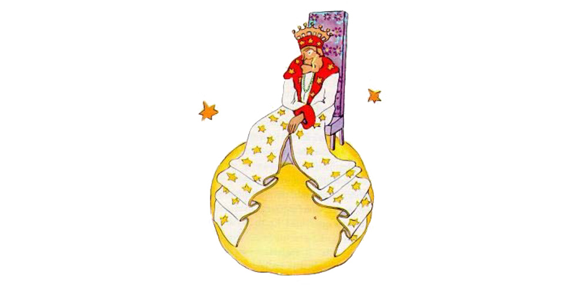

Chapter 10
He found himself in the neighborhood of the asteroids 325, 326, 327, 328, 329, and 330. He began, therefore, by visiting them, in order to add to his knowledge. The first of them was inhabited by a king. Clad in royal purple and ermine, he was seated upon a throne which was at the same time both simple and majestic.
"Ah! Here is a subject," exclaimed the king, when he saw the little prince coming.
And the little prince asked himself:
"How could he recognize me when he had never seen me before?"
He did not know how the world is simplified for kings. To them, all men are subjects.
"Approach, so that I may see you better," said the king, who felt consumingly proud of being at last a king over somebody.
The little prince looked everywhere to find a place to sit down; but the entire planet was crammed and obstructed by the king's magnificent ermine robe. So he remained standing upright, and, since he was tired, he yawned.
"It is contrary to etiquette to yawn in the presence of a king," the monarch said to him. "I forbid you to do so."
"I can't help it. I can't stop myself," replied the little prince, thoroughly embarrassed. "I have come on a long journey, and I have had no sleep..."
"Ah, then," the king said. "I order you to yawn. It is years since I have seen anyone yawning. Yawns, to me, are objects of curiosity. Come, now! Yawn again! It is an order."
"That frightens me... I cannot, any more..." murmured the little prince, now completely abashed.
"Hum! Hum!" replied the king. "Then I−− I order you sometimes to yawn and sometimes to−−"
He sputtered a little, and seemed vexed.
For what the king fundamentally insisted upon was that his authority should be respected. He tolerated no disobedience. He was an absolute monarch. But, because he was a very good man, he made his orders reasonable.
"If I ordered a general," he would say, by way of example, "if I ordered a general to change himself into a sea bird, and if the general did not obey me, that would not be the fault of the general. It would be my fault."
"May I sit down?" came now a timid inquiry from the little prince.
"I order you to do so," the king answered him, and majestically gathered in a fold of his ermine mantle.

But the little prince was wondering... The planet was tiny. Over what could this king really rule?
"Sire," he said to him, "I beg that you will excuse my asking you a question−−"
"I order you to ask me a question," the king hastened to assure him.
"Sire−− over what do you rule?"
"Over everything," said the king, with magnificent simplicity.
"Over everything?"
The king made a gesture, which took in his planet, the other planets, and all the stars.
"Over all that?" asked the little prince.
"Over all that," the king answered.
For his rule was not only absolute: it was also universal.
"And the stars obey you?"
"Certainly they do," the king said. "They obey instantly. I do not permit insubordination."
Such power was a thing for the little prince to marvel at. If he had been master of such complete authority, he would have been able to watch the sunset, not forty−four times in one day, but seventy−two, or even a hundred, or even two hundred times, with out ever having to move his chair. And because he felt a bit sad as he remembered his little planet which he had forsaken, he plucked up his courage to ask the king a favor:
"I should like to see a sunset... do me that kindness... Order the sun to set..."
"If I ordered a general to fly from one flower to another like a butterfly, or to write a tragic drama, or to change himself into a sea bird, and if the general did not carry out the order that he had received, which one of us would be in the wrong?" the king demanded. "The general, or myself?"
"You," said the little prince firmly.
"Exactly. One much require from each one the duty which each one can perform," the king went on. "Accepted authority rests first of all on reason. If you ordered your people to go and throw themselves into the sea, they would rise up in revolution. I have the right to require obedience because my orders are reasonable."
"Then my sunset?" the little prince reminded him: for he never forgot a question once he had asked it.
"You shall have your sunset. I shall command it. But, according to my science of government, I shall wait until conditions are favorable."
"When will that be?" inquired the little prince.
"Hum! Hum!" replied the king; and before saying anything else he consulted a bulky almanac. "Hum! Hum! That will be about−− about−− that will be this evening about twenty minutes to eight. And you will see how well I am obeyed."
The little prince yawned. He was regretting his lost sunset. And then, too, he was already beginning to be a little bored.
"I have nothing more to do here," he said to the king. "So I shall set out on my way again."
"Do not go," said the king, who was very proud of having a subject. "Do not go. I will make you a Minister!"
"Minister of what?"
"Minster of−− of Justice!"
"But there is nobody here to judge!"
"We do not know that," the king said to him. "I have not yet made a complete tour of my kingdom. I am very old. There is no room here for a carriage. And it tires me to walk."
"Oh, but I have looked already!" said the little prince, turning around to give one more glance to the other side of the planet. On that side, as on this, there was nobody at all...
"Then you shall judge yourself," the king answered. "that is the most difficult thing of all. It is much more difficult to judge oneself than to judge others. If you succeed in judging yourself rightly, then you are indeed a man of true wisdom."
"Yes," said the little prince, "but I can judge myself anywhere. I do not need to live on this planet.
"Hum! Hum!" said the king. "I have good reason to believe that somewhere on my planet there is an old rat. I hear him at night. You can judge this old rat. From time to time you will condemn him to death. Thus his life will depend on your justice. But you will pardon him on each occasion; for he must be treated thriftily. He is the only one we have."
"I," replied the little prince, "do not like to condemn anyone to death. And now I think I will go on my way."
"No," said the king.
But the little prince, having now completed his preparations for departure, had no wish to grieve the old monarch.
"If Your Majesty wishes to be promptly obeyed," he said, "he should be able to give me a reasonable order. He should be able, for example, to order me to be gone by the end of one minute. It seems to me that conditions are favorable..."
As the king made no answer, the little prince hesitated a moment. Then, with a sigh, he took his leave.
"I made you my Ambassador," the king called out, hastily.
He had a magnificent air of authority.
"The grown−ups are very strange," the little prince said to himself, as he continued on his journey.